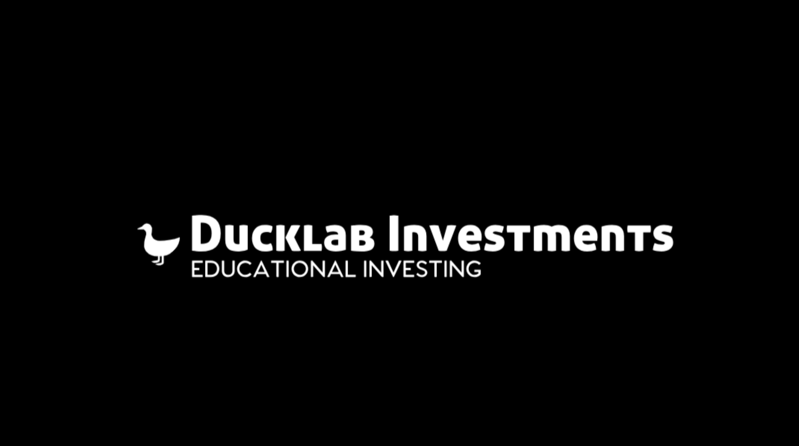

Software Engineering Internships
Aersys Inc.
January 2019 - May 2019
Goal: To Develop a fantasy game that allows aspiring investors to learn how to trade financial stocks.The game supports trading activities and simulates a broker who pretends to execute trading orders.
Actions:
As a group we were able to developed an interface that simulates role of broker that executes educated trades as well as simulates a competition aspect in order to make the simulator a game
We essentially created a fantasy league but instead of the statistics in a sporting game, we created a league with all types of functionality that uses actual stock data, including buy/sell stocks, trading, different game types, multiple leagues, cross platform functionality, security features and real data as well as gearing the basis of the simulator to be educational in its function, teaching young investors how to operate in the market
Our software was designed to utilize SQL databases, big data analysis, .NET programming, Alexa Integration, and Microsoft's Azure to result in a website, and functional iOS and Android applications
However it doesn't stop there we were able to implemented desktop ticker hardware, using data from databases that shows how your stocks are doing in real time
I also headed and organized all documentation and presentation of progression through development cycle, utilizing symbolic representation of software life-cycle models
View and Download the Project
E-Archive
Report 1
Report 2
Report 3
Presentation Demos 1 and 2
Electrical Engineering Internships
Stock Market Investment League Simulator
January 2019 - May 2019
Goal: To Develop a fantasy game that allows aspiring investors to learn how to trade financial stocks.The game supports trading activities and simulates a broker who pretends to execute trading orders.
Actions:
As a group we were able to developed an interface that simulates role of broker that executes educated trades as well as simulates a competition aspect in order to make the simulator a game
We essentially created a fantasy league but instead of the statistics in a sporting game, we created a league with all types of functionality that uses actual stock data, including buy/sell stocks, trading, different game types, multiple leagues, cross platform functionality, security features and real data as well as gearing the basis of the simulator to be educational in its function, teaching young investors how to operate in the market
Our software was designed to utilize SQL databases, big data analysis, .NET programming, Alexa Integration, and Microsoft's Azure to result in a website, and functional iOS and Android applications
However it doesn't stop there we were able to implemented desktop ticker hardware, using data from databases that shows how your stocks are doing in real time
I also headed and organized all documentation and presentation of progression through development cycle, utilizing symbolic representation of software life-cycle models
View and Download the Project
E-Archive
Report 1
Report 2
Report 3
Presentation Demos 1 and 2